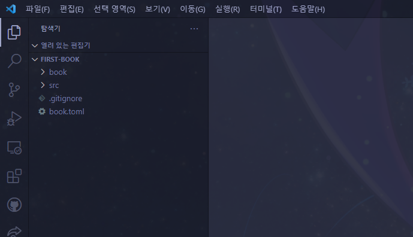

새로운 책 만들기
이제 mdBook을 본격적으로 사용해보면서 저희만의 작은 책을 만들어봅시다! 우선 CMD를 키고 cd Desktop을 입력해 바탕화면으로 이동한 후, mdbook init first-book을 입력해봅시다. 그런 다음 y와 My First Book을 입력해줍시다.

그리고 바탕화면을 확인해보면 first-book이라는 폴더가 생성된 것을 확인할 수 있습니다. VSC를 키고, 파일 -> 폴더 열기를 눌러 first-book 폴더를 열어봅시다.

그러면 해당 폴더가 위 그림과 같은 구조로 되어 있음을 확인할 수 있습니다. 각 요소가 무슨 역할을 하는지 알아봅시다.
- src: 책의 내용이 저장된 폴더.
- chapter_1.md: 기본으로 만들어진 마크다운 파일. 이 파일과 같은 방법으로 책에 포함될 모든 문서를 만들게 됩니다.
- SUMMARY.md: 책의 단원 구성을 담은 마크다운 파일.
- book: 웹에 표시하기 위해 변환된 책 파일을 담은 폴더. mdbook 프로그램으로 자동생성되는 부분으로 건드릴 필요 없습니다.
- book.toml: 책의 속성을 저장하는 파일.
그럼 살펴봐야 할 파일의 내용을 확인해봅시다.
book.toml
book.toml 파일은 책의 속성을 기록합니다. 현재 내용은 아래와 같은 형식일 겁니다.
[book]
language = "en"
multilingual = false
src = "src"
title = "My First Book"
language는 이 책의 언어를 표시합니다. 우리 책은 한국어로 적힐 예정이니 ko로 바꿔줘도 되지만, 이는 웹 검색 노출과 가장 큰 관련이 있는 거라 가만히 둬도 됩니다.
multilingual는 다국어를 지원하는 사이트인지 아닌지를 표기하는 항목입니다. 아예 지워버려도 됩니다.
src는 책의 내용이 어느 폴더에 들어있는지를 표시합니다. 전술했듯이 책의 내용은 src 폴더 안에 들어 있으므로 src = "src"가 올바른 값입니다.
title은 책의 제목입니다. 사이트 상단에 제목으로 항시 표시됩니다. 이는 후에 확인해볼 겁니다.
수식 지원 추가
한편 마크다운은 기본적으로 수식을 지원하지 않습니다. 대신, mdBook에 수식을 지원하는 플러그인을 간단히 추가할 수 있습니다. book.toml 파일 밑에 아래 내용을 추가해주세요.
[output.html]
mathjax-support = true
그러면 이 책에서 수식을 사용할 수 있게 됩니다. 구체적인 사용 방법은 곧 알아볼 겁니다.
최종적으로 book.toml의 내용은 아래와 같아져야 합니다.
[book]
language = "ko"
src = "src"
title = "My First Book"
[output.html]
mathjax-support = true
book.toml은 이대로 놓고 저장해둡시다. 이 파일은 제목을 바꿀 때 이외에는 건드릴 일이 없습니다.